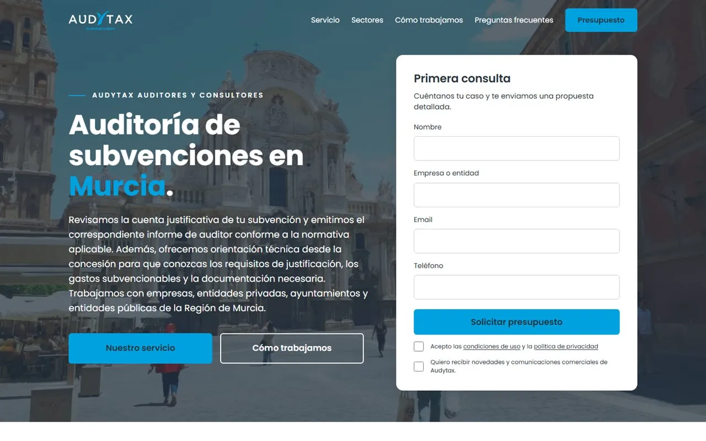
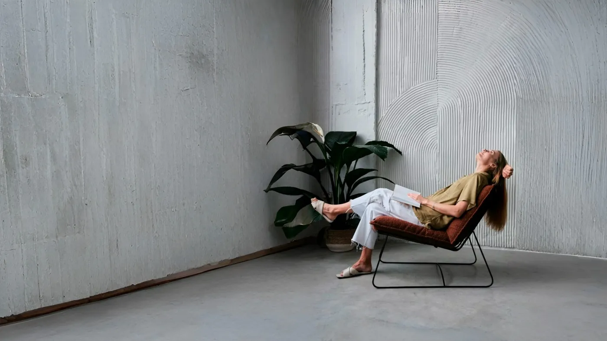
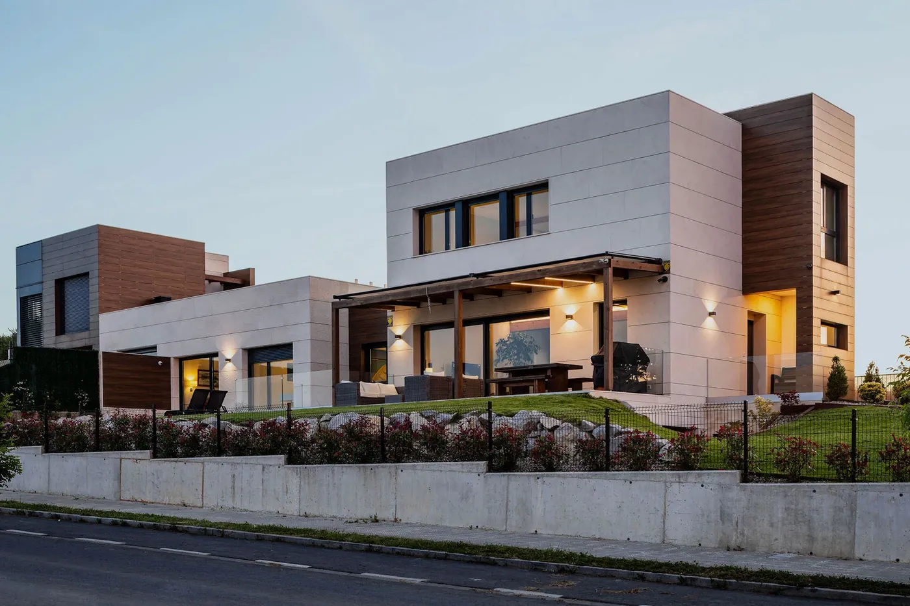

Webs en WordPress, React y Astro, con desarrollo propio cuando el proyecto lo pide.
Rubén Pérez Bilbao, España
Desarrollador web
& AI Maker
Desarrollo webs y aplicaciones, y construyo integraciones y automatizaciones con IA para resolver tareas reales.
133
herramientas MCP
Las que mis conectores dan a Claude en 6 servicios
10
proyectos destacados
Webs, plugins, apps con IA y front-end
Claude, Gemini y ChatGPT
en mi día a día
Perfil
De la web a la IA aplicada
Soy desarrollador web y hoy me centro en aplicar la inteligencia artificial al desarrollo de software y a la automatización de procesos.
Me gusta experimentar con tecnologías nuevas y convertirlas en algo que se use de verdad en el día a día.
Desde 2019
Desarrollando webs
Front-end, WordPress y, ahora, IA
- WordPress
- React
- Astro
- Angular
- Laravel
- Node.js
Qué hago
Lo que construyo para equipos y empresas
Conecto asistentes de IA con tus servicios para que consulten datos y actúen desde el chat.
Menos piezas,
mejor elegidas.
Claude Code, ChatGPT y Google Antigravity para analizar repositorios, construir funcionalidades y prototipar rápido.
No ofrezco un paquete cerrado: elijo la tecnología que encaja con cada proyecto, de una web en WordPress a una integración con IA.
Flujos que conectan WhatsApp, correo y datos con IA: resúmenes, tareas y recordatorios automáticos.
Convierto un asistente generalista en un especialista para cada tarea del equipo.
Stack técnico
Lenguajes
- HTML5
- CSS3
- SASS / SCSS
- JavaScript (ES6+)
- TypeScript
- PHP
Frameworks
- WordPress
- Angular
- React
- Astro
- Laravel
- Node.js
CMS & web
- Elementor Pro
- Divi
- ACF Pro
- Plugins a medida
- Temas a medida
Herramientas
- Git & GitHub
- Hostinger Cloud
- Google Analytics 4
- Search Console
- REST APIs & JSON
Portfolio
Proyectos
Proyectos
& soluciones reales
Trabajos para clientes y proyectos propios. Abre cualquiera para ver qué hice y con qué tecnología.
IA & Automatización
WA Automator — WhatsApp + Gemini
Resume tus chats, detecta tareas y te las recuerda por WhatsApp. En modo ocupado, responde por ti.
- Node.js
- Gemini
- whatsapp-web.js
- MySQL

IA & Conectores MCP
MCP Control
Hub privado de conectores MCP: Claude consulta y actúa en Toggl, Hostinger, Google Analytics, tl;dv, PageSpeed y el correo.
- Model Context Protocol
- Claude
- Node.js
- APIs REST

IA & Automatización
Skills personalizadas para IA
Instrucciones y procedimientos que adaptan Claude Code y ChatGPT a tareas concretas de desarrollo.
- Claude Code
- ChatGPT
- Markdown
- JSON
Claude + MCP

WordPress
Audytax — Auditoría de subvenciones
Web para una firma de auditoría de subvenciones, con página para la Región de Murcia y solicitud de presupuesto.
- PHP
- Tema propio
- Plugin propio

WordPress
Infernuko Zatak — Laster
Web para publicar drops y fichas de artistas, gestionados con un plugin propio.
- Elementor
- Custom Post Types

WordPress
iHodei — Agencia de marketing
Web de una agencia de Bilbao con vídeo de fondo en la portada, animaciones SVG y SEO on-page.
- Elementor
- SASS

WordPress
José Luis Breva
Web de un estudio de arquitectura en la que mandan las galerías de proyectos.
- Elementor
- UI/UX

WordPress
Zenthia Capital
Web de una firma de inversión con widgets propios para presentar sus servicios.
- Elementor
- Custom Widgets

WordPress
Sopela Beach Home
Alquiler vacacional de lujo en Sopela (Bizkaia) con motor de reservas propio de la web.
- Booking Engine

Front-end
Grupo MásMóvil
Componentes y landing pages en Angular para Yoigo, Virgin Telco y Guuk.
- Angular
- TypeScript
- SASS
Carrera
Experiencia
Experiencia
profesional
Un recorrido colaborando con agencias de marketing digital, consultoras tecnológicas y entornos corporativos en España. Combino el desarrollo web con la mentalidad maker para construir soluciones e integraciones con IA que mejoran flujos de trabajo reales.
-
2023 – Actualidad
Hodeicloud (iHodei)
Desarrollador web, WordPress & conectores MCP / IA
Sitios WordPress de principio a fin, de la maquetación al desarrollo de plugins y temas propios. Además, investigo e implanto conectores MCP y soluciones con Claude y Antigravity para automatizar procesos internos.
-
2022
Workoholics
Desarrollador front-end Angular
Front-end en Angular para el Grupo MásMóvil: componentes reutilizables y arquitectura limpia.
-
2019
ELIM5 (ADP)
Desarrollador web & UI
Diseño y maquetación de landing pages interactivas con JavaScript, HTML5, CSS3 y Bootstrap, con estándares de accesibilidad y buenas prácticas.
Desarrollo web & IA
Convirtamos tu idea
Convirtamos tu idea
en algo que funcione
Una web, un conector para tu asistente de IA o un proceso que quieres automatizar: cuéntamelo y lo vemos juntos.
Escríbeme
Empecemos
Empecemos
tu proyecto
Para proyectos, colaboraciones u ofertas de empleo.
Rubén Pérez
Respondo en menos de 24 h laborables
Email
info@ia-automator.com
Ubicación
48004 Bilbao, España (presencial / remoto)
GitHub
github.com/ArielG19
Disponible para nuevas oportunidadesDesarrollo web · Integraciones con IA
Envíame un mensaje
Se abrirá tu programa de correo con el mensaje listo para enviar.